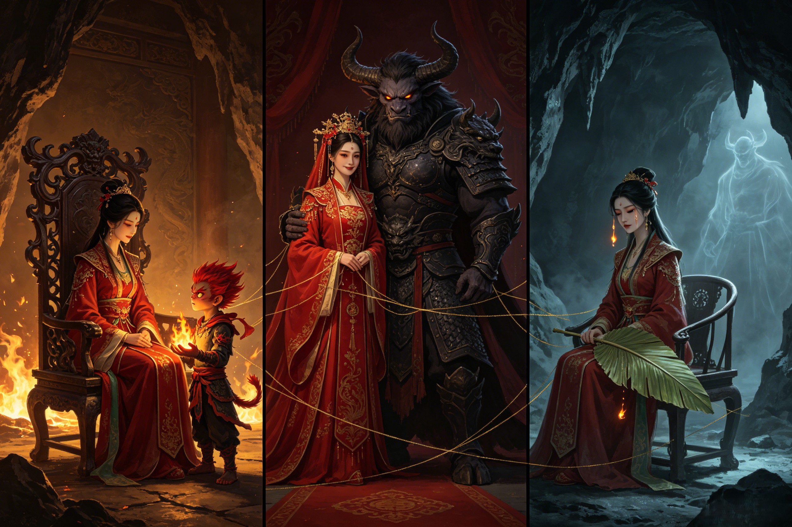

Husband. Wife. Child. Empire.
The Bull Demon King. Princess Iron Fan. Red Boy. Princess Jade Face. Together they were the most powerful demon family under heaven — and the most tragically human story in all of Journey to the West.
The marriage of Princess Iron Fan and the Bull Demon King (牛魔王) was the supreme political alliance of the demon world — a union that reshaped the hierarchy of power in the mortal realm. Princess Iron Fan brought to the marriage sovereignty over Flaming Mountain, the most strategically vital territory in the known world, whose eternal fires blocked the passage between east and west. She brought the Banana Leaf Fan, the only artifact in existence capable of controlling those fires — making her not merely the queen of the mountain but the absolute mistress of who could pass and who could not. She brought centuries of Taoist cultivation that had elevated her from a rakshasa to an immortal, giving her a discipline, patience, and strategic mind that complemented her husband's raw power. She brought an iron will that could command armies and manage the complex administrative affairs of a demon kingdom. The Bull Demon King brought complementary strengths: raw titanic strength that rivaled Sun Wukong himself — the two had been sworn brothers in their youth, and their martial ability was considered equal. He brought a network of sworn brotherhoods with the six other great demon sages, a web of alliances that made their domain nearly unassailable. He brought a fearsome reputation that kept both heaven's armies and rival demon lords at a respectful distance. And, at least initially, he brought genuine love. The early years of their marriage were marked by a partnership rare in the demon world: two powers who ruled together, respected each other, and produced an heir who would inherit both their strengths.
Their combined domain was vast. Flaming Mountain and its surrounding territory stretched for hundreds of li. The Plantain Cave complex (芭蕉洞) served as their primary residence — a fortress-palace hidden behind the mountain's inferno, accessible only to those who knew the paths through the flames. The Bull Demon King maintained additional holdings elsewhere, but Plantain Cave was their home, the seat of their shared power. Their son Red Boy (红孩儿) was born into this empire — a child who was not merely the heir to a kingdom but a force of nature in his own right. From birth, Red Boy could summon samadhi fire (三昧真火), the hottest flame in existence, the same primordial fire that Taishang Laojun used in his Eight Trigrams Furnace. Red Boy did not merely play with fire — he was fire. The daily life of the family in those golden years is glimpsed only in fragments of the novel, but they paint a picture of a functioning, even happy, household: the Bull Demon King returning from patrols of the territory, his massive frame filling the cave's entrance as his wife received him with the dignity befitting a queen; Red Boy practicing his fire manipulation in the mountain's flames — the only place hot enough for him to train safely, the eternal blaze serving as his nursery and his classroom; Princess Iron Fan managing the domain's affairs from her throne, receiving reports from demon lieutenants, planning the administration of a territory that made mortal kingdoms look like villages. They were feared by heaven and respected by demon-kind. No one challenged them. For a brief shining moment, the demon royal family was invincible — not because they were monsters, but because they were united.
Red Boy's power grew too great. By the age of seven — in demon years, during which he appeared as a child but was already centuries old — he could defeat mountain gods who crossed him, command fire demons who served as his personal army, and terrorize local earth spirits into paying him tribute. The local spirits, reduced to tattered servants of a child tyrant, finally appealed to higher powers. But no local official could control him. The problem of Red Boy was the problem of a child who had inherited the power of two immortal bloodlines and had not yet learned restraint — had never needed to learn it, because no one in his world could teach him consequences. When the pilgrims of Tang Sanzang passed through his territory en route to the West, Red Boy captured the monk — not out of malice, but out of a child's desire to prove himself. He wanted to show his parents that he could accomplish what adult demons dreamed of: eat a Buddha's flesh and become immortal. He did not understand that his actions would bring the full force of heaven down upon him. Sun Wukong fought him and, shockingly, could not defeat him. The Monkey King, who had terrorized heaven itself, who had defeated the celestial army and 100,000 heavenly soldiers, was driven back by Red Boy's samadhi fire. The boy's flames were too pure, too hot — they burned not merely the body but the soul. Wukong tried smoke, he tried water, he tried every trick in his considerable arsenal. Nothing worked. He had to retreat multiple times, singed and humiliated.
Eventually Wukong did what he always did when he faced an enemy beyond his power: he appealed to Guanyin. The bodhisattva of mercy arrived at the battlefield not with weapons but with superior strategy and psychological manipulation. She knew she could not defeat Red Boy's fire directly — no one could. Instead, she tricked him. She threw her precious vase of sweet dew into the air as bait; when Red Boy tried to seize it, she trapped him. She subdued the boy who had terrified heaven's greatest warrior, and then she did something far more devastating to his mother: she took him as her disciple. Red Boy was taken to the Southern Sea and renamed Shancai Tongzi (善财童子), the "Boy of Excellent Wealth" — a title that sounds pleasant but represents the complete erasure of his former identity. The fire demon who had commanded legions was now a penitent child standing at the bodhisattva's side. Princess Iron Fan was not present for any of this. She learned of her son's fate after the fact, from reports brought by fleeing demon servants who had witnessed the confrontation. Her child — the boy she had carried, nursed, trained, and loved — was now the property of the bodhisattva of mercy. Guanyin never consulted her. Never apologized. Never acknowledged her as a mother with rights. This is the wound at the center of Princess Iron Fan's character: her son was taken, and the universe considered it a happy ending. The bodhisattva gained a disciple. The pilgrims gained safe passage. Heaven gained a soul redeemed. But a mother lost her child — and no one in that cosmic calculation thought to count her loss.
After Red Boy was taken, the Bull Demon King changed. The loss of his son — his heir, his pride, his mirror — broke something deep within him. He could not bear to be at Flaming Mountain, surrounded by memories of the child who was no longer there. The flames that had once been his son's playground now seemed to mock him. The cave echoed with a silence that had once been filled with laughter and the crackle of samadhi fire. He could not face his wife — could not bear to see in her eyes the same grief that was consuming him. So he left. He found comfort — or distraction — in Princess Jade Face (玉面公主), a beautiful and wealthy fox spirit who ruled a domain of her own. Princess Jade Face was everything Princess Iron Fan was not: young where the queen was mature, carefree where she was burdened, demanding nothing of the Bull Demon King but his presence where his wife reminded him of everything he had lost. She offered him a life free from grief, a palace unhaunted by absence, a woman who did not remind him of his failure as a father. The Bull Demon King did not divorce Princess Iron Fan. He simply stopped coming home. He installed Princess Jade Face in a luxurious secondary palace and spent most of his time there, returning to Plantain Cave only occasionally and with growing emotional distance. When he did visit, he came not as a husband but as a stranger — his eyes elsewhere, his heart elsewhere, his body already halfway back to the fox's embrace before he had even arrived.
For Princess Iron Fan, this was a betrayal that cut deeper than any blade. She had already lost her son. Now she was losing her husband — not to death, not to war, but to a younger woman with no grief-weight. Princess Jade Face did not steal the Bull Demon King through cunning or magic — she simply offered him what his wife could not: escape. And he took it. The novel portrays Princess Jade Face as shallow and self-interested, and she is — but Princess Iron Fan's tragedy is that even a shallow woman can destroy a deep marriage when the husband is willing to be distracted. Yet Princess Iron Fan did not break. She did not beg him to stay. She did not confront Princess Jade Face. She did not rage at the heavens that had taken her son and her husband in a single stroke. Instead, she continued to rule Flaming Mountain. She continued to manage the domain. She continued to be the iron queen. When the Bull Demon King did visit, she received him with cold dignity — the wife who would not give him the satisfaction of seeing her crumble. She was, after all, a princess who had become a queen by her own will, and she would not let anyone — not heaven, not fate, not a fox spirit with a pretty face — take that from her. Her dignity was not a consolation prize. It was an act of war. Zhu Bajie would later kill Princess Jade Face during the pilgrims' passage through Flaming Mountain — an act of violence that solved nothing, brought no one back, and left Princess Iron Fan alone with the ashes of a marriage that had once been the envy of the demon world. The Bull Demon King, hearing of his mistress's death, finally fought alongside his wife one last time — but it was too late. The family was already gone. They were just two people swinging weapons at a fate that had already won.
After the pilgrims pass through Flaming Mountain and the fire is extinguished, what remains of the demon royal family? The answer is as stark as the scorched earth around the mountain. Red Boy is still with Guanyin — the novel gives no indication he ever reunites with his mother. Shancai Tongzi stands beside the bodhisattva in countless iconographic portrayals, a serene child with a gentle expression, the fire demon's fury extinguished by celestial training. Princess Iron Fan's son is alive, he is well, he is redeemed — and he is lost to her forever. The bodhisattva of mercy, who represents compassion itself, never thinks to return the child to his mother. The Bull Demon King is captured by Nezha and the celestial army after the climactic battle at Flaming Mountain. His fate is left unresolved — some traditions say he was forced into heaven's service as a beast of burden, others that he was imprisoned, still others that he was eventually released to wander the mortal realm as a punishment. The great Bull Demon King, who once ranked among the seven demon sages and was the equal of Sun Wukong, ends the novel not with a roar but with a whimper — bound in celestial chains, his kingdom in ruins, his family scattered. Princess Jade Face is dead, killed by Zhu Bajie in a moment of casual violence that the novel treats as unremarkable. She was shallow, she was selfish, she was the other woman — but she was also a being with her own desires and fears, and her death passes almost without comment.
And Princess Iron Fan? She is exactly where she has always been: at Plantain Cave, alone, the Banana Leaf Fan in her hand, ruling what remains of her domain. She has lost her son. She has lost her husband. She has lost the fire that defined her mountain — the flames that made Flaming Mountain impassable have been extinguished, reducing her strategic importance to nothing. But she has not lost herself. This is the deepest meaning of her name: iron does not require happiness to retain its nature. It exists. It endures. It can be heated and cooled and beaten and abandoned — and it remains iron. In the quiet after the pilgrims have passed, the novel leaves Princess Iron Fan not as a villain defeated nor as a damsel rescued, but as something rarer in epic literature: a woman who survived everything the story threw at her and is still standing. She did not reform. She did not repent. She did not ascend to heaven or achieve enlightenment. She remained what she had always been — a demon immortal, a queen, a mother who had outlived her family. The novel gives her no grand finale, no redemptive arc, no celestial reward. It simply leaves her in her cave, with her fan, with her dignity. Her family is gone. Her iron remains. She shares this fate with other figures in Chinese mythology whose families were broken by the will of heaven — like Erlang Shen, whose own mother was a celestial being imprisoned beneath a mountain for the crime of loving a mortal; like Nuwa, the mother of all humanity, who watched her children perish in the flood she had to repair the sky to stop. And like Guanyin herself — who now has what Princess Iron Fan lost — the irony is that the bodhisattva of mercy has a child at her side, and the mother who bore that child has nothing but the memory of his first cry. The story does not call this justice. It calls it the way of the world. And Princess Iron Fan, the iron queen, accepts it — not because she forgives, but because she endures.
Her husband is the Bull Demon King (牛魔王), one of the seven great demon sages and sworn brother of Sun Wukong. Her son is Red Boy (红孩儿), a fire demon of immense power who was subdued by Guanyin and renamed Shancai Tongzi. Her rival is Princess Jade Face (玉面公主), a fox spirit who became the Bull Demon King's mistress after he abandoned his wife. Together they formed the most powerful demon family in Journey to the West, and their story is one of the novel's deepest emotional arcs — a portrait of a family destroyed not by external enemies but by grief, betrayal, and the merciless machinery of heaven's will.
Red Boy had captured Tang Sanzang and proved too powerful for Sun Wukong to defeat — his samadhi fire (三昧真火) was the hottest flame in existence, and even the Monkey King could not withstand it. Guanyin subdued him through strategy and psychological manipulation, then took him as a disciple to the Southern Sea, renaming him Shancai Tongzi (善财童子), the "Boy of Excellent Wealth." Princess Iron Fan was never consulted or informed — she learned of her son's fate after the fact, from fleeing demon servants. The novel presents this as a "happy ending" for Red Boy, who is redeemed and enlightened. But from the mother's perspective, it is an abduction sanctioned by heaven — a child taken not because his mother was unfit but because his power was inconvenient to the celestial order.
The marriage was destroyed by two tragedies. First, the loss of their son Red Boy to Guanyin, which broke the Bull Demon King's spirit. He could not bear to remain at Flaming Mountain, surrounded by memories of his son, and sought escape from his grief. Second, the Bull Demon King's abandonment of his wife for Princess Jade Face (玉面公主), a younger, wealthier fox spirit who offered him a life free from sorrow. He did not divorce Princess Iron Fan — he simply stopped coming home. After the pilgrims' passage through Flaming Mountain, the Bull Demon King was captured by Nezha and the celestial army, Princess Jade Face was killed by Zhu Bajie, and Princess Iron Fan was left alone at Plantain Cave — her family destroyed, her iron will intact.
Dive Deeper